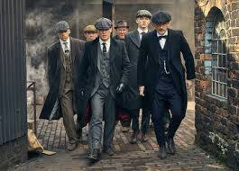

Peaky Blinders Fan Page
Bienvenido a la fan page dedicada a la familia Shelby. Repasá los personajes más importantes de la serie, mirá trailers de las temporadas y reviví los mejores momentos.

Bienvenido a la fan page dedicada a la familia Shelby. Repasá los personajes más importantes de la serie, mirá trailers de las temporadas y reviví los mejores momentos.